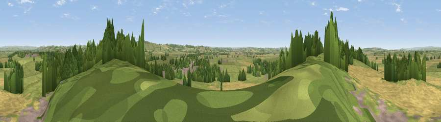

Viewpoint near Queen Camel
#14695 in England · top 31% of its area beats it · near Queen CamelWhere it is
The exact computed spot (ST 59275 25525). Click the marker for map links.
The view, rendered

A 360° render of this exact spot computed from the terrain model, tree cover and land cover — summer colours, afternoon light, calibrated against photographs of famous viewpoints. Real trees, hedges and buildings will differ in detail.
The panorama
Grey silhouette: terrain skyline in each direction (720 bearings, Earth curvature and refraction included). Dashed green: skyline with trees (+15 m) and buildings (+8 m) as obstacles. Blue strip: how far the ground is visible on each bearing.
Where the view opens
Wedge length = distance to the farthest visible ground on that bearing (vegetation-aware). Rings at 10, 25 and 50 km.
What fills the view
52% grassland · 32% cropland · 14% woodland · 2% built-up
Angular shares of the visible panorama (visual magnitude), not map area. Landscape diversity 0.46 (0–1 Shannon).
Key numbers
More beautiful places nearby
The staircase of upgrades: each row has a higher view potential than everything closer. Driving times are estimates from straight-line distance, calibrated against real road routing — check an actual route before setting out.
| Place | Direction | Drive | Score |
|---|---|---|---|
| Cadbury Castle | E · 3 km | ~8 min | 72.1 |
| Parrock Hill | ESE · 4 km | ~9 min | 75.5 |
| The Beacon | ESE · 5 km | ~10 min | 75.8 |
| Viewpoint near Lamyatt | NE · 13 km | ~24 min | 77.8 |
| Viewpoint near Hewish | SW · 24 km | ~39 min | 78.5 |
| Lewesdon Hill | SSW · 29 km | ~46 min | 83.3 |
| Viewpoint near North Chideock | SSW · 38 km | ~57 min | 87.1 |
| Golden Cap | SSW · 38 km | ~57 min | 88.7 |
51.02764, -2.58208 · source: screening · position refined by local search. Computed location — check access rights before visiting.